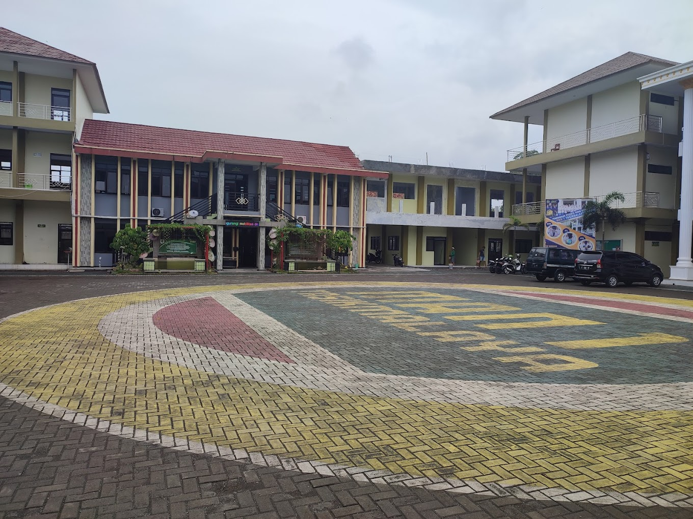

Judul Berita 1
5 November 2024
MAN 1 Tasikmalaya berhasil meraih banyak juara dalam lomba tingkat nasional
Baca SelengkapnyaMAN 1 Tasikmalaya berkomitmen untuk mencetak generasi berprestasi dan bermartabat.
MAN 1 Tasikmalaya adalah madrasah yang fokus pada pendidikan berbasis nilai agama dan ilmu pengetahuan. MAN 1 Tasikmalaya merupakan sekolah menengah umum yang berciri khas agama Islam sebagai alih fungsi dari PGAN Sukamanah dengan legalitas hukum berdasarkan Surat Keputusan Menteri Agama RI Nomor 64 Tahun 1990 dan selanjutnya ditetapkan menjadi MAN Sukamanah dengan Surat Keputusan Menteri Agama Nomor 42 Tahun 1992 dengan NPSN: 20276807 dan NSM: 131132060006.
Pada tahun 2015 sesuai Surat Keputusan Menteri Agama RI Nomor 212 Tahun 2015 tentang perubahan nama Madrasah di Provinsi Jawa Barat. MAN Sukamanah berubah nama menjadi MAN 1 Tasikmalaya. MAN 1 Tasikmalaya telah terakreditasi dengan memperoleh nilai Akreditasi “A” berdasarkan Surat Keputusan dari Badan Akreditasi Provinsi dengan Nomor 02.00/112/BAP-SM/SR/X/201.
Visi: Menjadi madrasah terdepan untuk mewujudkan generasi yang berkualitas tinggi dalam keimanan dan ketakwaan, menguasai ilmu pengetahuan dan teknologi serta mampu berkontribusi dalam kehidupan masyarakat (Beriman, Berilmu dan Beramal).
Misi:
Kami menawarkan program studi IPA, IPS, dan Agama yang terintegrasi dengan nilai-nilai keislaman.
Berbagai kegiatan dan prestasi yang diraih oleh MAN 1 Tasikmalaya.


Informasi terbaru tentang kegiatan dan prestasi MAN 1 Tasikmalaya.
5 November 2024
MAN 1 Tasikmalaya berhasil meraih banyak juara dalam lomba tingkat nasional
Baca Selengkapnya
10 Oktober 2024
Siswa MAN 1 Tasikmalaya berhasil juara 1 lomba gansa persada di Hari Bhakti Adhyasa ke-64
Baca Selengkapnya